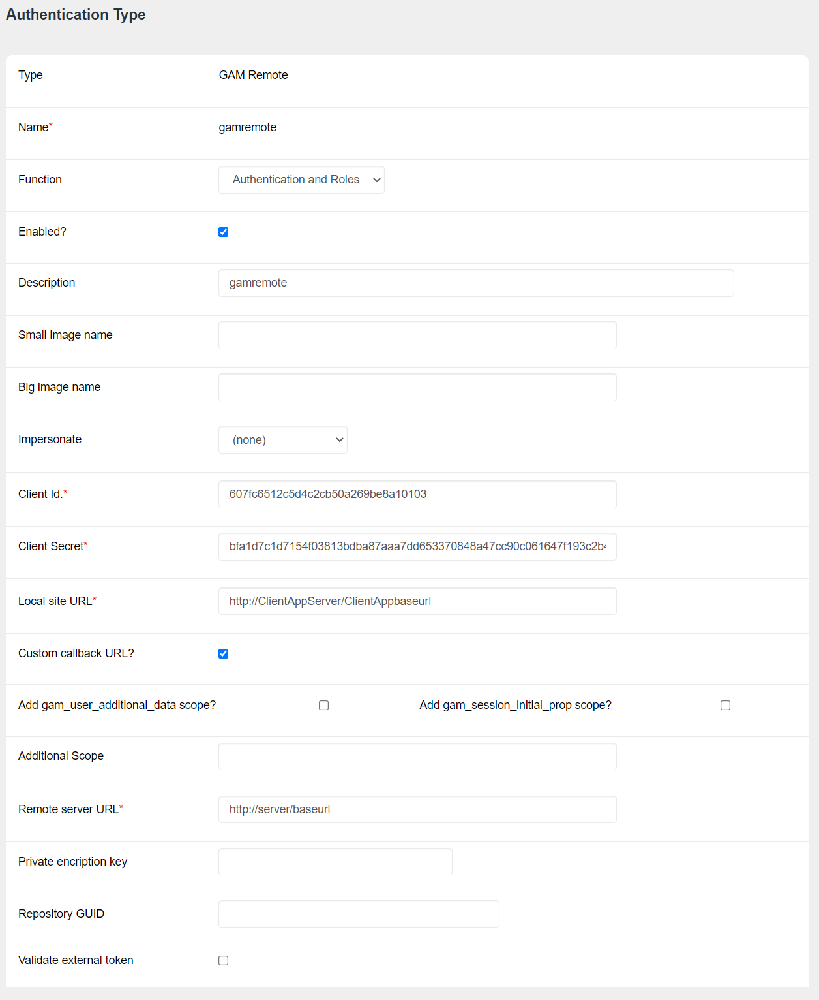

In this guide, you will find the Client configuration steps for GAM - GAMRemote Authentication Type.
From the GAM - Web Backoffice, add the Authentication Type through the Authentication Types menu item.
Next, add the information as explained below:

Picture #1. Defining GAM Remote Authentication Type. Web panel GAMExampleEntryAuthenticationType.
- Client ID. Client ID of the Application – the same as the one specified in the Identity Provider.
- Client Secret. Client Secret of the Application – the same as the one specified in the Identity Provider.
- Local Site URL. URL of the client application – the same as the one specified in the Call Back URL in the server.
- Custom callback URL?. If checked, GAM doesn't handle the response. The custom callback URL field must be marked in the identity provider.
- Add gam_user_additional_data scope? When additional data must be passed (such as dynamic attributes of GAM User), you must check this attribute. When this property is set, the "gam_user_additional_data" scope is automatically sent to the server. This corresponds to the property &Application.ClientAllowGetUserAdditionalData that has to be set to TRUE.
On the server side, the "Allow Authentication" checkbox under the section Web (Identity Provider, SSO) must be selected.
- Additional Scope. The additional scope can be any string. This is to support the GAM Events subscription for Remote Authentication: User_GetCustomInfo and User_SaveCustomInfo.
If no additional scope is added, the following basic information is transferred from the server to the client: Guid, Username, EMail, First_Name, Last_name, External_id, Birthday, Gender, Url_image, Url_profile, Phone, Address, City, State, Post_code, Language, Timezone. To send additional data, check the option "Get user additional data" in the server application.
- Add gam_session_initial_prop scope?
It is used to ask the Identity Provider to return to the client the initial properties dynamically set at login. The Identity Provider must also be configured to send this information.
For more details, see Howto: sending and receiving properties set at the login.
- Remote Server URL. URL of the server application (for example: http://server/TestGAMSSOServer.NetEnvironment). The format is: Http://<Server>:<Port>/<BaseURL>. For Java, don't include "/servlet".
- Private Encryption Key. This private encryption key is used to encrypt the communication between client applications and the server application. It must be configured with the same value as the one specified for the GAM application defined in the Identity Provider (the server). If they are different, an error "javax.servlet.ServletException: java.lang.InternalError: invalid key" is thrown.
- Repository GUID. Connect to this Repository in the Identity Provider.
- Validate External Token. Validate the session expiration using the Token Expiration and Token renovations of the Identity Provider. The property is AutovalidateExternalTokenAndRefresh. For example: &AuthenticationTypeGAMRemote.GAMRemote.AutovalidateExternalTokenAndRefresh = TRUE
Identity Provider Configuration for GAM Remote Authentication